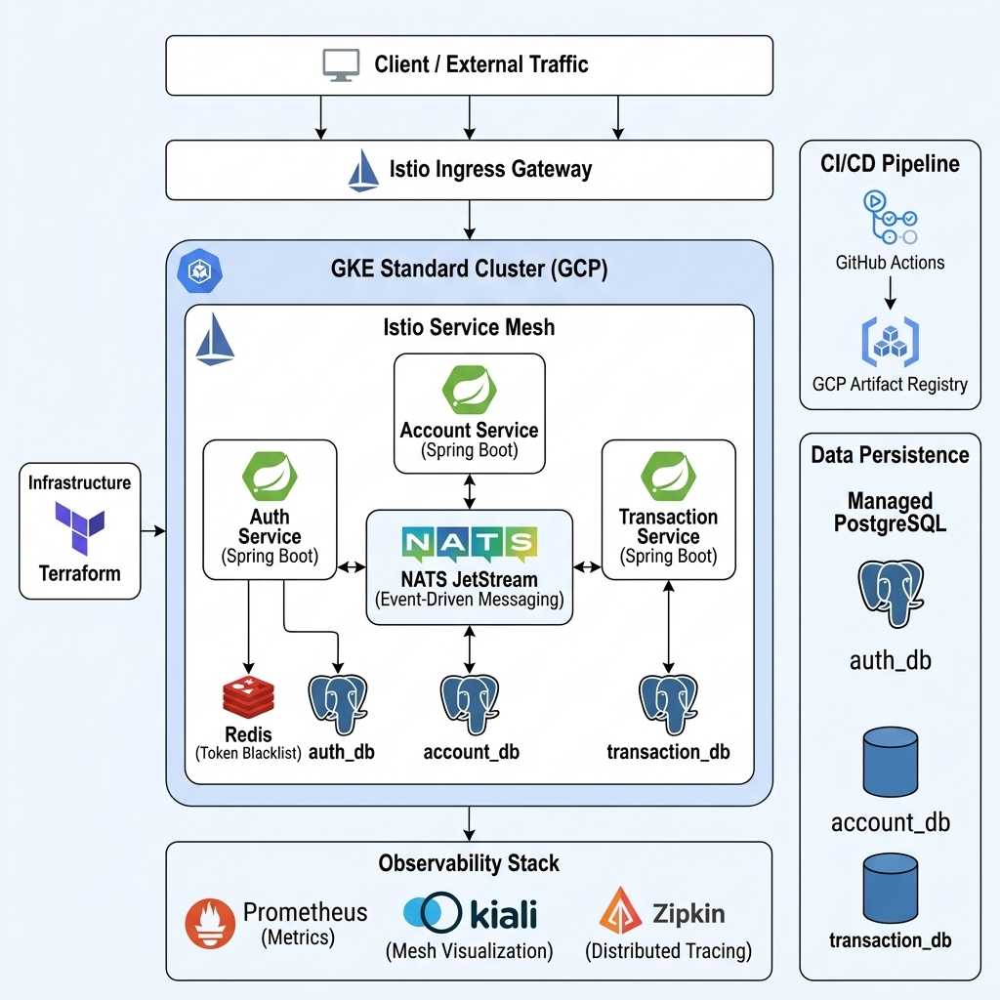

Spring Boot 기반의 계좌·거래 마이크로서비스 아키텍처 및 GKE/Istio/NATS 기반의 이벤트 주도(Event-Driven) 운영 환경 구축
Kiali를 통한 실시간 트래픽 가시화 및 서비스 의존성 관리, Zipkin을 활용한 분산 추적(Distributed Tracing)으로 마이크로서비스 간 병목 지점 및 지연 시간 정밀 분석
NATS 메시징 페이로드에 사용자 식별 정보(UserId)를 포함하여 전달함으로써, 비동기 서비스 전반에 걸쳐 인증 문맥을 명시적으로 공유
NATS JetStream의 메시지 보존(Persistence)을 통한 시공간 결합도 해소로 장애 전이를 원천 차단하고, SAGA 패턴 기반 보상 트랜잭션으로 비동기 데이터 정합성 보장
단일 PostgreSQL 파드 내에서 논리적 데이터베이스 분리를 통해 서비스 간 결합도를 낮추는 Database-per-service 패턴 준수
GCP GKE 인프라 내에서 서비스 메시가 적용된 마이크로서비스 레이아웃

Artifact Registry 리소스 생성 중 권한 부족으로 인한 실패를 서비스 계정에 'Artifact Registry Administrator' 역할을 추가하여 해결
.terraform 폴더 내 대용량 바이너리 파일이 커밋되어 푸시가 거부되는 문제를 .gitignore 최적화 및 커밋 재구성을 통해 해결
PAT(Personal Access Token)의 workflow 스코프 미활성화로 인한 배포 실패를 권한 갱신을 통해 해결
로컬 빌드 환경과 프로덕션 환경의 경로 차이로 인한 Docker 실행 오류를 빌드 이미지를 활용한 구조로 전환하여 해결
sudo 권한으로 docker pull 시 인증 정보가 공유되지 않는 문제를 Access Token 직접 추출 로그인 방식으로 해결
버전 간 호환성 문제로 인한 의존성 충돌을 검증된 조합(Boot 3.4.1)으로 다운그레이드하여 해결
GKE 네트워크 레이턴시로 인한 연결 타임아웃 문제를 Connection Timeout 설정 상향(2s → 10s)으로 해결
Istio가 NATS 프로토콜을 잘못 인식하여 메시지 유실이 발생하는 문제를 서비스 포트 이름에 'tcp-' 접두사를 명시하여 해결
트랜잭션 완료 후 잔액 반영 로직이 누락되어 0원으로 유지되던 문제를 TransactionResultSubscriber 데이터 정합성 로직 추가로 해결
비동기 메시징 전파 시 Trace ID가 유실되어 서비스 간 추적이 끊기던 문제를 NATS 메시지 페이로드에 Trace Context를 직접 주입(Inject) 및 추출(Extract)하는 방식으로 해결
비동기 메시징 처리 시 JWT 헤더가 유실되는 문제를 NATS 메시지 페이로드에 인증 Context를 직렬화하여 포함시키는 방식으로 해결